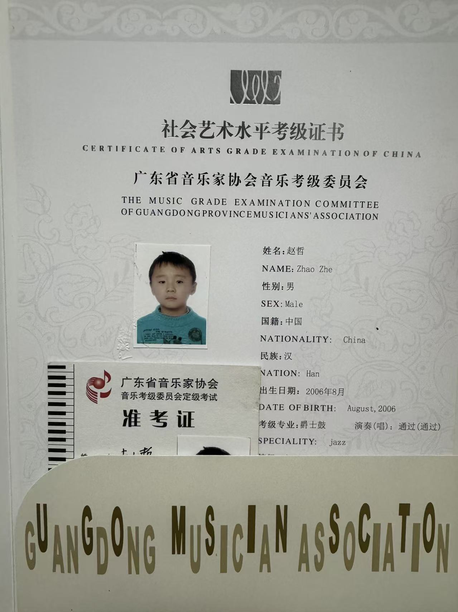
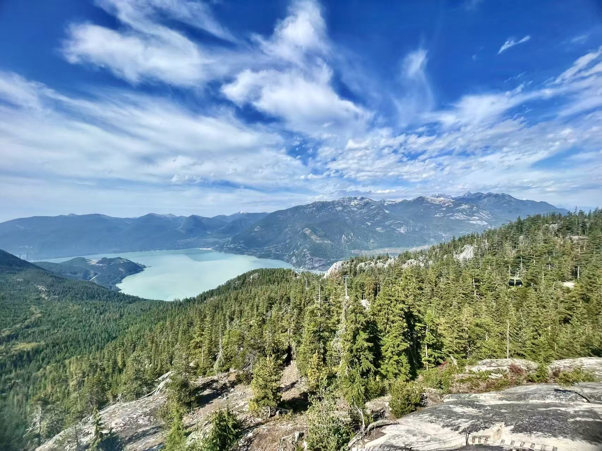
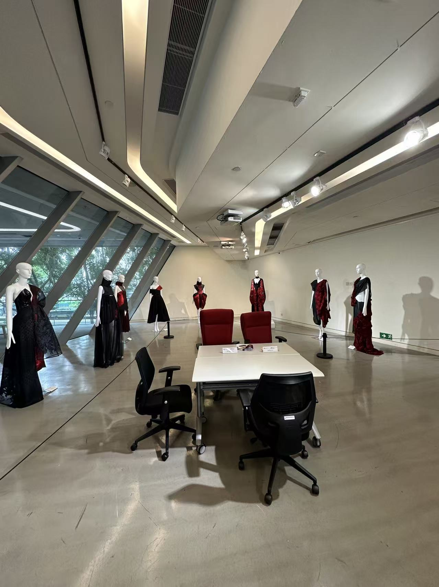
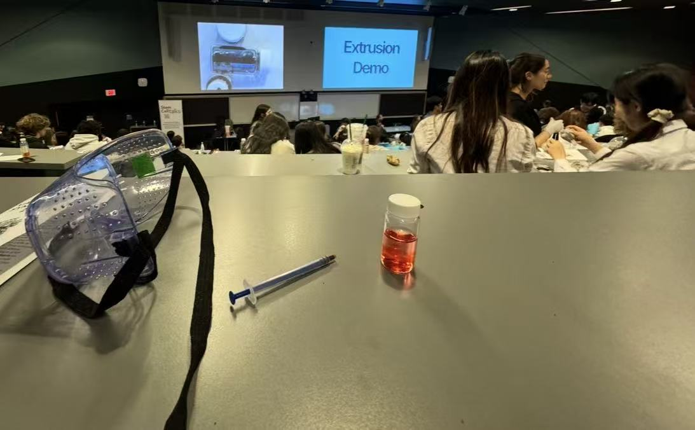

My name is Zhe Zhao, and I'm an international student from China at the University of California, Riverside. Growing up in a bicultural environment, I've become an open-minded, adaptable person who values interpersonal relationships the most.
Prior to entering UCR, I was educated in Vancouver, Canada in high school where I became acquainted with a multi-ethnic society. Studying abroad in my early years instilled skills such as independence, adaptability, and community service. Observing the lonely old mothers in the nursing homes there, I started a fund-raising work that raised over CAD \$3,000 from local nursing homes – to manage different recreation, clothes, and other important facilities.
Besides the fundraising, I also attended some nursing homes in Vancouver on a voluntary basis, where I socialized with the residents and took part in some of the activities and served them some small snacks like ice cream bars during some of the community events. This experience has made me even a firmer believer in the idea that the most valued gift that we can give to one another is our time, attention, and love.
When I was in middle school, and before entering high school, I volunteered in public parks in China, orienting tourists by introducing them to the layout of the parks and the itinerary of the parks they were visiting, as well as taking a proactive role in the restoration and maintenance of parks' grounds. From these experiences at an early age, my innate sense of volunteerism took root, carrying on to this day.
As well as my studies and charity projects, I spend most of my time on my favorite hobby, martial art Kendo, which I can fortunately continue with at the university Kendo club. Moreover, I have always loved music and, especially, playing the drums. I would study the drum material and pass several grading examinations during my childhood. Not only did I enjoy the rhythm, timing, and creative expression that this particular form of art provided to my life, but I have also been forced to stop taking proper lessons as my studies became the center of my life.
I have a great love for cross-cultural experiences, community service, and personal growth. As I begin my path at UCR, I look forward to giving back to the community and exploring how to contribute to society.



